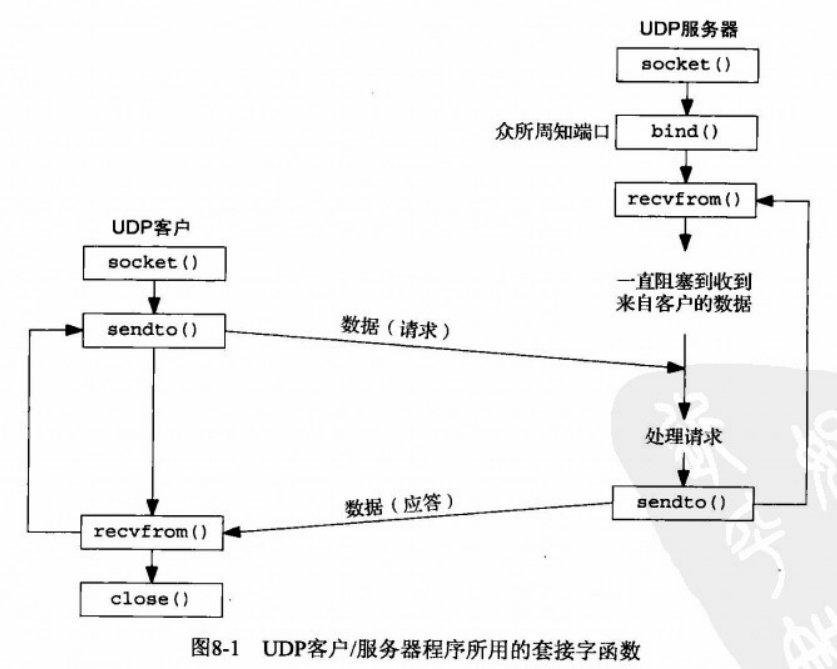
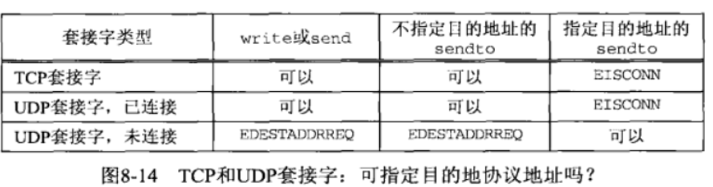
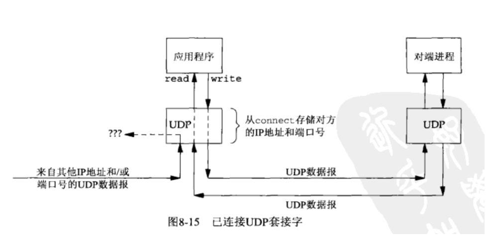

[UNP]:基本UDP套接字
UDP套接字API事件图

1. recvfrom(), sendto()
这两个函数类似于标准的read()和write()函数，不过需要三个额外的参数
recvfrom, sendto
1
2
3
4
5
6
7#include <sys/socket.h>
/* 接收信息函数 */
ssize_t recvform(int sockfd, void *buff, size_t nbytes, int flag,
struct sockaddr *from,socklen_t *addrlen);
/* 发送信息函数 */
ssize_t sendto(int sockfd, const void *buff, size_t nbytes,
int flags,const struct sockaddr *to,socklen_t addrlen);前三个参数等同于read和write的三个参数
描述符，指向读/写入缓冲区的指针和读/写字节数
flag设置相关参数
from当
recvfrom()在sockfd接受到数据时，from会存储数据发送者的套接字地址结构to欲发送一方的套接字地址结构
addrlenrecvfrom
对于
recvfrom(),addrlen是值-结果类型参数，传入时指代from的长度，传出时指代接收到数据后from被填充的字节大小sendto
to的长度
2. connect()
UDP中也可以使用connect(), 但是与TCP中使用的connect()效果完全不一样， UDP中的connect()完全是一个本地操作，不会发送任何数据给服务器，在进行基本的错误检查之后，connect()就会立即返回
connect()
1
2
3
4#include <sys/socket.h>
int connect(int sockfd, const struct sockaddr *servaddr,socklen_t addrlen);
// 返回：成功 0，失败 -1这里的
connect()与TCP中的connect()是同一个函数
与TCP一样，connect()调用完毕之后，套接字也从未连接UDP套接字变为了已连接UDP套接字
已连接UDP套接字与未连接UDP套接字相比，发生了三个变化
无法给输出操作指定目的IP地址和端口号:
具体来说就是API的限制:
- 无法在
sendto()中指定目的地址，第五个参数必须取空，第六个参数必须为0 - 作为
sendto()的代替，改用write()
- 无法在
只能接受
connect()指定目的地址的数据这里同样不能使用
recvfrom(), 只能使用read(),recv(),recvmsg()来代替如果有来自其他地址(非
connect()指定地址)的数据， 这些数据不会发送到该套接字由已连接UDP套接字引发的异步错误会返回给它们所在的进程，未连接UDP套接字不接受任何异步错误
图例


多次调用connect()
多次调用connect()有两种用途
指定新的IP地址和端口号
断开套接字
调用
connect()时将套接字地址结构的地址族设置为AF_UNSPEC即可断开已连接(调用connect())的UDP套接字
本博客所有文章除特别声明外，均采用 CC BY-SA 4.0 协议 ，转载请注明出处！